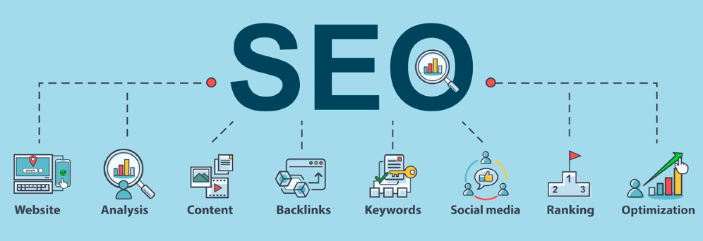

Smile Ninja Dental SEO Report
Project Summary
Search Engine Optimization (SEO) is a set of practices designed to improve the way your website functions and appears in organic search rankings (Moz, 2021). In this report, we will not only detail how organic ranking is decided, but give a detailed analysis of the current Smile Ninja Dental & Orthodontics website and recommend important SEO practices that you can use to get ahead of your competitors. Some of these practices include keyword optimization, increasing accessibility, increasing inbound links, and establishing unique page titles and descriptions. Additionally, we have included tailored recommendations for increasing Smile Ninja’s overall online presence and following. Continue reading to find out how you can chop your ranking competition.

Components of SEO (Bailey,2021).